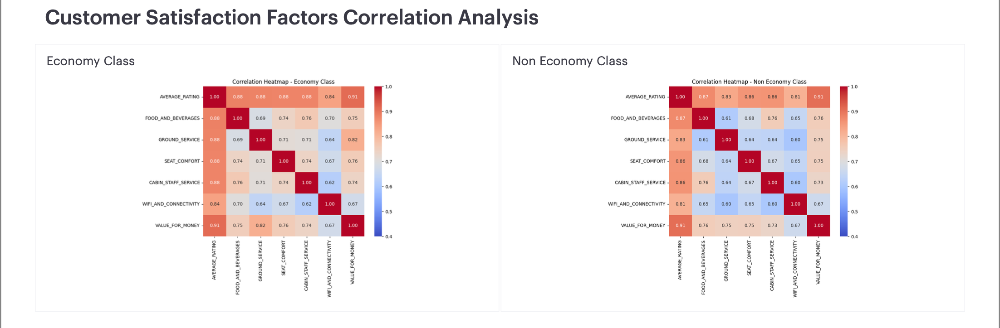
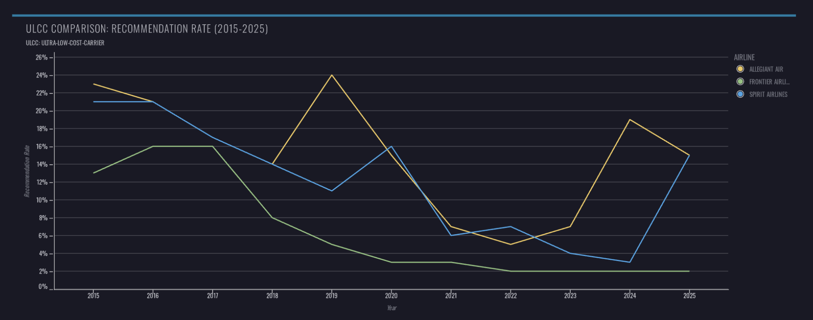

System map
Each repo is one part of the pipeline
03
Transform
Medallion → star: dims, incremental fact, airline agg + snapshots.
skytrax_reviews_transformation04
Orchestrate / Ops
Airflow + cosmos · slim CI/CD · Terraform · email on fail.
extract_load + transformation

Required stack + extras
Tech stack — and why I chose each


| Layer | Choice | Why (trade-off) |
|---|---|---|
| Warehouse | Snowflake | Managed cloud DWH — COPY INTO bulk loads, RBAC, tag-based masking, compute decoupled from storage. |
| Transform | dbt Core | Tests, docs, contracts, incremental, defer/state — portable vs Cloud lock-in for this project. |
| BI | Mode Analytics | Warehouse-direct, SQL-first — every chart is a defensible query; Delta / Frontier / Spirit Mode slices from analyst partners. |
| Orchestration | Airflow + Datasets + cosmos | Event-driven crawl→process→load; cosmos makes dbt graph first-class tasks. |
| Ingestion | Custom Python scraper | AirlineQuality.com had no public API (and is now permanently closed) — Fivetran/Airbyte couldn’t land HTML reviews; polite crawl + parse into a replayable S3 archive instead. |
| Landing | AWS S3 | Replayable raw archive; decouple scrape from load; cheaper than warehouse history. |
| IaC | Terraform (AWS + Snowflake roots) | Every bucket, role, schema, warehouse, mask, CloudFront, OIDC provider — reproducible, reviewable, no click-ops drift. |
| CI/CD + Auth | GitHub Actions + OIDC | PR: SQLFluff + slim state:modified+ build; CD: defer/favor-state; GHA assumes AWS IAM via OIDC — no static cloud keys. |
Pillar 1 · Data Modeling & Architecture
Kimball star + Medallion layers
1
Business process
Customer review submissions on AirlineQuality.com (site now permanently closed — historical scrape).
2
Grain Most important
One row per review in fct_review.
3
Dimensions
Customer · Airline · Aircraft · Location · Date.
4
Facts
Service ratings → average_rating / recommended.
Bronze
RAW / S3
- S3 raw/ + processed/
- RAW.AIRLINE_REVIEWS · LOAD_AUDIT
Silver
SOURCE → INT
- stg__skytrax_reviews
- int_reviews_cleaned
Gold
MARTS
- 5 dims + incremental fct_review
- fct_review_enriched · agg_airlines_review + snap

Pillar 2 · Data Transformation
ELT practices + incremental fact
Pipeline inside dbt
- Staging: dedup + deterministic review_id
- Intermediate: clean / normalize
- Incremental fct_review merge on review_key
- HWM + lookback (incremental_lookback_days=3)
- Airline agg table + check-strategy snapshot
- Contract + macros (gdpr_erase)
{{ config(
materialized='incremental',
unique_key='review_key',
incremental_strategy='merge',
) }}
-- updated_at > max(source_updated_at) - lookback
-- backfill: --full-refresh


Pillar 3 · Show → Why → What-if
Data Governance
Show
Where it lives
- quality.py + LOAD_AUDIT
- Masking Terraform + PII_HASH_MASK on dim_customer
- Live: USE ROLE SKYTRAX_ANALYST → hashed name / nationality
- Live: USE ROLE SKYTRAX_TRANSFORMER → clear text
- dbt test · LOAD_AUDIT · Elementary volume warn
Why
Trade-offs
- Non-blocking quality (quarantine by date)
- Hash mask keeps joins usable
- Policy at warehouse read-time
- Elementary in warehouse — anomalies + test history survive beyond GHA logs
- Warn first — volume baseline needs history; don’t fail deploys while learning
What-if
Live adaptations
- Fail the DAG if >5% of dates quarantine
- “Volume cliff overnight” → Elementary warn → promote to error after baseline is trusted
- Publish edr report beside CloudFront dbt docs
- Row access policy by airline partner · time-travel rollback after a bad load
Pillar 4 · Data Insight
One insight, one action — per airline
Delta
- Pain points: Economy and Premium care about different things (staff/food/value vs seat/dining); Wi‑Fi lags.
- Suggestion: Fix by cabin — Wi‑Fi fleet-wide, Economy value/pitch, Premium dining/comfort at ATL / JFK / LAX.
Frontier
- Pain points: Weakest of the three on recommendation (5.7%); IFE 1.09 — Allegiant and Spirit beat it on the same fare tier.
- Suggestion: Close the value gap — prioritize Economy entertainment and seat comfort.
Spirit
- Pain points: Chronic low scores (1.59); IFE 1.11 / Wi‑Fi 1.13; Business travellers the most unhappy.
- Suggestion: Connectivity/IFE SLAs, rebuild Business offering, fix ops at MIA / MEX / GOT.



Pillar 5 · DataOps
Branching, CI/CD, release
Release process
- Feature branch → PR → slim CI → merge main → CD
- CI: merge-base → SQLFluff → dbt clone → state:modified+
- CD: OIDC → --defer --favor-state → docs to CloudFront
- CD emails me on success or failure (Gmail SMTP, if: always())
- Breaking type change → one-time prod --full-refresh


Pillar 5 · DataOps
Terraform · OIDC · CI/CD — how the platform is run
Terraform (IaC)
Nothing important is click-ops.
- EL repo: S3 landing, IAM, Snowflake RAW tables, stage, LOAD_AUDIT, PII tags/masking
- Transform repo: warehouses, RBAC, SOURCE/INTERMEDIATE/MARTS/DEV_*, artifact bucket, CloudFront, OIDC provider + IAM role
- terraform apply stays manual on purpose (infra blast radius)
OIDC auth
GitHub Actions never stores static AWS keys.
- Terraform creates GitHub OIDC provider + deploy role
- CD job: aws-actions/configure-aws-credentials → short-lived creds
- Role can: read/write dbt artifacts S3, invalidate CloudFront
- Snowflake still uses service users (DBT_CICD / PROD_DBT) via GitHub secrets
CI / CD release
Ship only what changed.
- CI (PR): merge-base → SQLFluff → clone prod → build/test state:modified+
- CD (main): download prod manifest → dbt build --defer --favor-state
- Publish docs → S3 → CloudFront invalidate
- Email alert: CD always notifies me — failure lands in inbox with run link
- Airflow/cosmos schedules ongoing prod dbt; GHA ships code